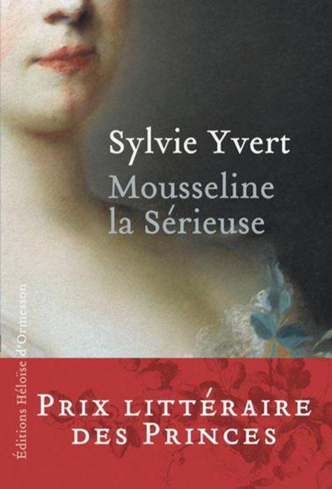

C’est un véritable moment de grâce et de délicatesse que nous offre Sylvie Yvert avec « Mousseline la Sérieuse ». L’ouvrage a tout d’abord paru aux éditions Éloïse d’Ormesson en 2016 avant d’être édité en Pocket.
Ce livre porte en sous-titre « J’étais la fille de Marie-Antoinette ». Ce surnom de Mousseline fut donné par La Reine Marie-Antoinette elle-même à sa fille, la Duchesse d’Angoulême, alias Madame de France ou Marie-Thérèse-Charlotte de France, Comtesse de Marnes. Les titres ne manquèrent pas à la fille ainée de Louis XVI et de Marie-Antoinette. Elle naquit le 19 décembre 1778, à Versailles où elle passa son enfance. Elle eut une longue vie faite d’incarcération à la terrible prison du Temple, d’exil post révolutionnaire, de retours en France et de nouveau de nombreux exils. Elle mourut en 1851 à l’âge de 73 ans après avoir connu la royauté, la Terreur dont elle fut une victime, trois révolutions, deux empires et deux républiques. Sa vie fut jalonnée de cadavres, d’horreurs et de déceptions…
Relatant la fuite à Varennes, elle remarque, désespérée :
« En conséquence, la Révolution ne put se terminer, et conduisit ensuite à la Terreur et à la dictature. Pour finir, je suis la seule survivante parmi tous les occupants, je dis bien tous, de cette berline. » p.89
Elle mourut dans ce qui était alors l’Empire Autrichien, à Frohsdorf. Elle ne laissa pour Mémoire qu’un feuillet de dix-huit pages manuscrites, retouché par son oncle Louis XVIII.
C’est là toute la force et la prouesse de Sylvie Yvert que de restituer des « mémoires » à la première personne en se glissant dans la peau de la Comtesse de Marnes. C’est en effet une biographie travaillée et recherchée que nous livre l’auteur. On ne sait plus si la plume est tenue par la fille de Marie-Antoinette ou par la romancière inspirée qui a fouillé scrupuleusement les journaux de l’époque et les Mémoires –très nombreux- des principaux témoins qui ont relaté la vie de Marie-Thérèse de France et ont été en contact avec elle. Le travail patient et minutieux de compilations et de recherches historiques permet à Sylvie Yvert de nous faire connaître la vie de la Duchesse d’Angoulême à son époque et avec sa mentalité. L’ouvrage a reçu le Prix littéraire des Princes et le Prix Histoire du Nouveau Cercle de l’Union.
Parlant à la première personne, elle n’a aucun mal à se faire adopter par le lecteur, au point de poser sur ses proches un regard plus qu’indulgent, le regard aveugle qu’un enfant doit avoir pour son père : Louis XVI n’est jamais vu comme un monarque faible et encombré, voire balourd, pas du tout fait pour être roi et manquant tout simplement de contact avec le réel. (L’arrêt pique-nique lors de la fuite à Varennes !)
Cependant l’Histoire, que ce soit la Grande ou la petite, n’est pas laissée de côté ; le détail qui s’avère être le déclencheur de l’événement n’est pas oublié :
« (1789) Car depuis les grands froids de l’hiver qui avaient fait geler la Seine, les moulins, pris dans les glaces, étaient demeurés à l’arrêt, réveillant le spectre de la famine. » p.44
Les tourments que la famille royale subit à la prison du Temple sont décrits dans un langage sobre mais poignant, suffisant pour en découvrir toute l’horreur, pour toucher du doigt la barbarie qui avait alors saisi la nation française :
« Non seulement Simon (le gardien) frappait fréquemment Charles (le petit Louis XVII) au visage, mais encore se jouait-il de son sommeil avec une indicible cruauté, le réveillant à plusieurs reprises pour lui crier en pleine nuit : Capet ! Tu dors ? Race de vipère, lève-toi – me voilà, citoyen, répondait docilement le pauvre petit en nage. » p.220
Le Dauphin mourut au Temple, de tuberculose généralisée, nous dit-on, mais plus certainement des mauvais traitements qu’il subit. Des sceaux d’eau qui lui étaient jetés dessus, en plein hiver, pendant son sommeil. Le froid, les rats, la crasse et une alimentation infecte eurent raison d’une santé fragile.
On pourrait parfois trouver Marie-Thérèse de France presque indulgente sous la plume de Sylvie Yvert :
« Et que dire de notre cousin, le Duc d’Orléans, qui s’était affublé du ridicule sobriquet de Philippe Égalité ? Lorsque mon père apprit qu’il avait cru devoir voter sa mort, sa réaction fut sobre. Il s’en déclara seulement « bien affligé ». Par ce dernier acte abject, ce personnage scella une vie de félonie durant laquelle il mit toute son énergie à ébranler le trône. Quand on sait que la mort sans sursis possible s’est jouée à une –une seule !- voix près, on peut s’autoriser à penser que ce fut la sienne… »p.155
Comble d’ironie et de ce qui se nommait alors la justice révolutionnaire, Philippe-Égalité fut à son tour guillotiné le 6 novembre 1793. Louis-Philippe, son fils, accédera à la couronne en 1830, comme « roi des français ».
En plus de l’excellence de la plume, la lucidité de l’auteur rend cet ouvrage particulièrement riche et attrayant:
« S’ajoutait, après la suppression de la noblesse héréditaire l’année précédente, l’abolition des titres, décorations, blasons. Il fallait cependant posséder un revenu foncier pour acquérir le droit de vote. On voit par-là combien « le peuple » était évincé du projet par la bourgeoisie conquérante. » p.99
Pour les « révolutionnaires », le suffrage n’était pas encore « universel »...
Lucide sur son personnage, selon l’auteur, Marie-Thérèse l’est aussi sur la fonction politique du mariage d’une princesse de sang :
« Loin d’ignorer que j’étais devenu un symbole pour la France, malgré la loi salique qui m’a sans doute sauvé la vie, je comprenais déjà combien était politique la question de mon alliance. » p.269
Peut-être y a-t-il quelques manques dans cette biographie trop parfaite. Marie-Thérèse n’est jamais présentée comme ultra-royaliste. Était-elle utilisée par les ultras ou l’était-elle réellement, par conviction ? C’est elle qui éleva Henri d’Artois qui aurait dû devenir le futur Henri V. Ce dernier refusa quasiment le Trône lors de la « querelle » du drapeau. Le sceptre était à portée de main et une question de principe laissa vacant le Trône de France :
« On lui demanda davantage encore. Était-il prêt à endosser le drapeau tricolore ?
Par égard pour moi, à qui cet étendard rappelait de si cruelles épreuves, le pouvait-il ? Tous mes sinistres souvenirs y étaient associés. » p.334
Saura-t-on réellement un jour ce qui influença le plus le potentiel Henri V, l’ascendant de sa parente ou une rigidité psychologique du prétendant ?
Quoi qu’il en soit, cet ouvrage est indispensable à qui s’intéresse à cette période. Riche, documenté, bien inspiré et d’une langue dans laquelle le plaisir de la lecture le dispute au désir de connaître.

Partager cette page